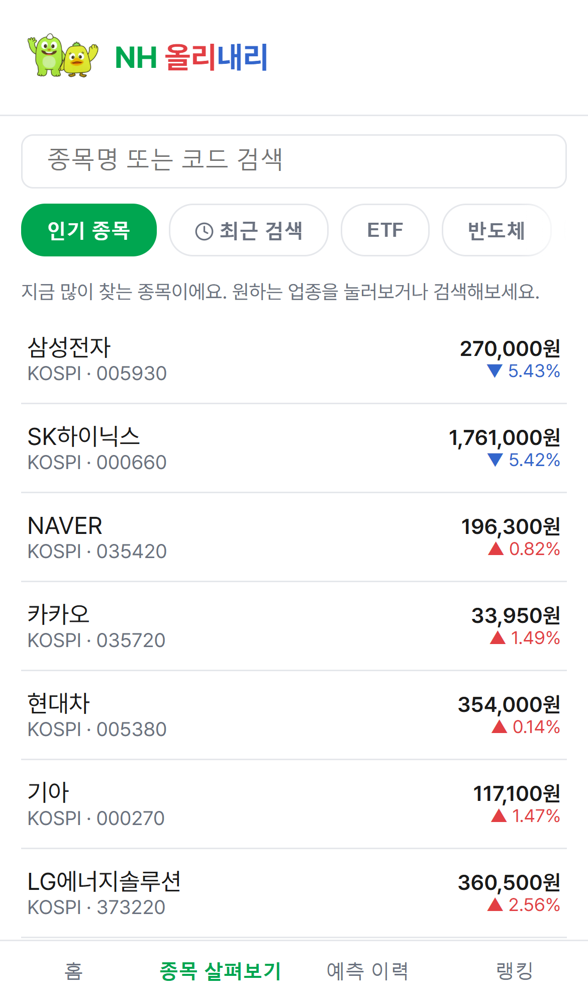
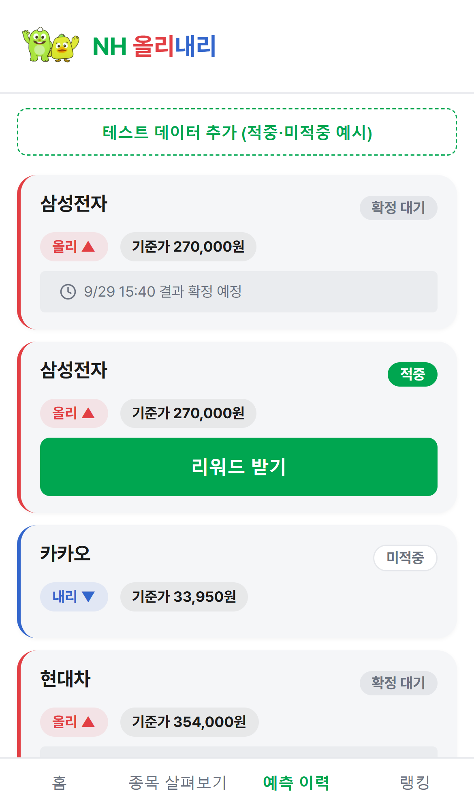

1
홈
앱 소개와 3대 핵심 기능(영향요인 분석 · 리포트 · 예측)을 한눈에 보여줘요.

AI 기반 주가 방향성 예측 서비스
AI 종목 리포트와 영향요인 분석을 보고, 방향성 예측에 참여해 리워드까지 받아가는 NH 올리내리의 화면 흐름을 단계별로 정리했습니다.
앱 소개와 3대 핵심 기능(영향요인 분석 · 리포트 · 예측)을 한눈에 보여줘요.
인기 종목 · 업종 · ETF · 최근 검색으로 원하는 종목을 빠르게 찾아요.

오늘 주가가 왜 움직였는지 올리 · 내리 포인트로 근거를 정리해요.

뉴스 · 공시를 AI가 요약해 핵심 이슈와 투자 포인트를 알려주고, 궁금한 점은 챗봇에게 물어봐요.

지금 기준가를 보고 내일 오를지 내릴지 예측을 제출해요.

제출 결과와 기준가가 기록되고, 다음 거래일 종가 확정 후 판정돼요.

적중 · 미적중 · 확정 대기 상태와 리워드 수령 여부를 한눈에 확인해요.

이번 주 · 이번 달 적중 횟수 기준으로 내 순위와 상위 랭커 혜택을 확인해요.